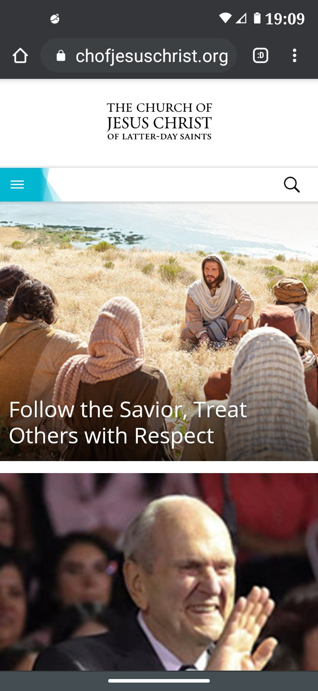

Design Principles Document
Emma L. Burkett
Proximity
Goodreads
Goodreads.com
.jpg)
This website shows a use of 'proximity' in it's design. The button under the large 'goodreads Choice Awards' is close by,
and also colored in a similar way to show that it has a strong relation with the main advertisment.
Rule of Thirds
The Church of Jesus Christ of Latter-Day Saints
churchofjesuschrist.org

In the first picture that pops up on this page, there is a demonstation of the rule of thirds.
If you were to draw a grid of nine, and observe where the lines intersect, you'll notice that
Jesus Christ's face is on the top right intersection of lines. You'll also notice how His disiples
give the photo direction - the top of their heads span from one intersection of lines to another.
Visual Hierarchy
Pintrest
Pintrest.com
This website uses visual hierarchy by making the 'terms of service' box a stark black, and very big.
It's not reccommened for websites to make very large buttons, as someone might accidenly push it without meaning to.
So it could be argued that this website is using visual hierarchy in a dibilitaing way, but since it's a one time
push button, and it's so important for companies to be clear in their terms and conditions, I would argue that
it's a good up of visual hierarchy.